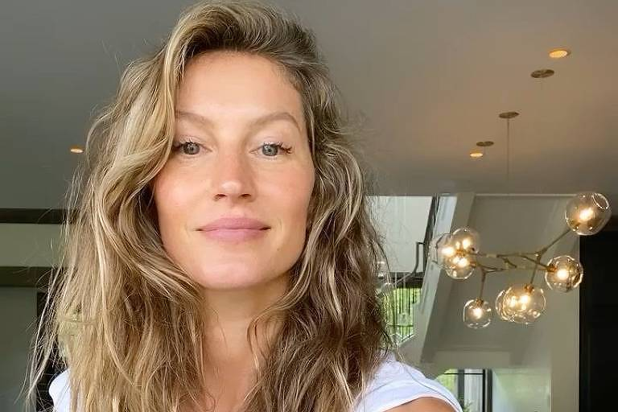

Biografia Gisele Bundchen
Gisele Bündchen (1980) é uma modelo, empresária e ativista ambiental brasileira, considerada uma das modelos mais bem sucedidas do mundo da moda.
Gisele Caroline Bündchen nasceu em Horizontina, Rio Grande do Sul, no dia 20 de julho de 1980. Seus pais, Valdir Bündchen e Vânia Monnenmacher são descendentes de alemães. Gisele tem cinco irmãs, entre elas Patrícia, sua irmã gêmea.